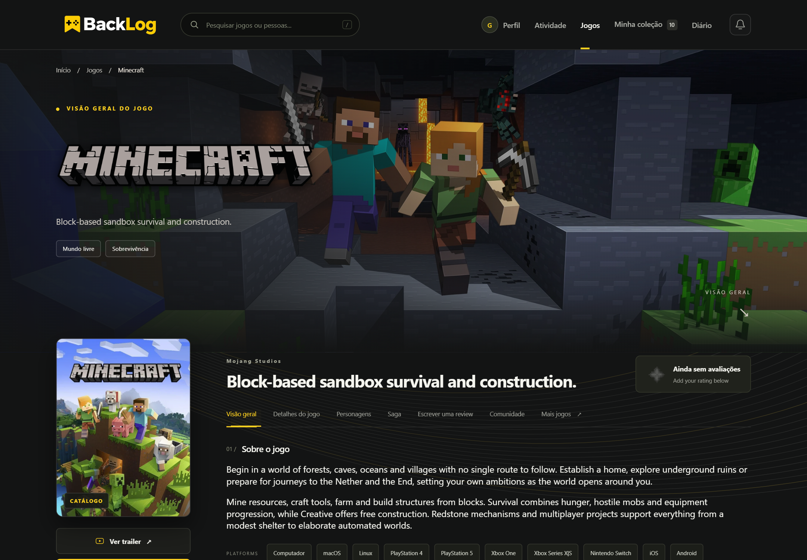

PROJETO DE PORTFÓLIO
Vem conhecer
o BackLog.
Quer ver como o projeto está ficando? O código está no meu GitHub.
BackLog / PÁGINA DO JOGO

REPOSITÓRIOgabriellcs7 / BackLog
github.com/gabriellcs7/BackLog
Que função você colocaria nele?